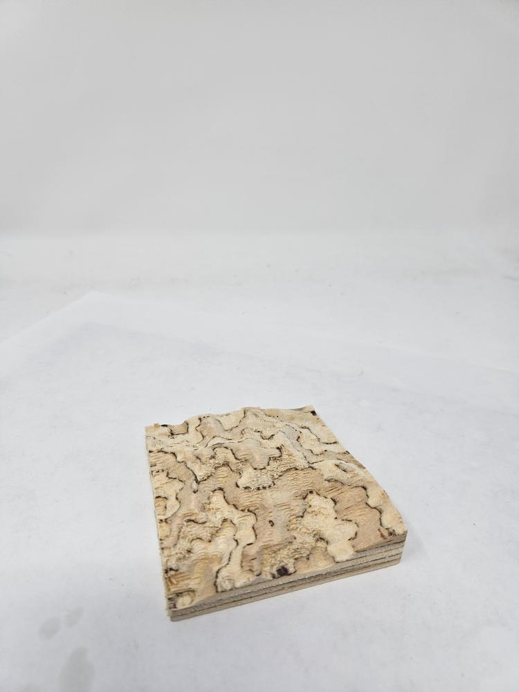
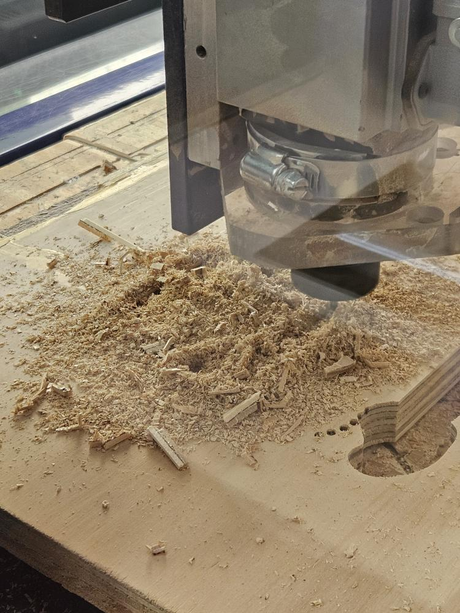
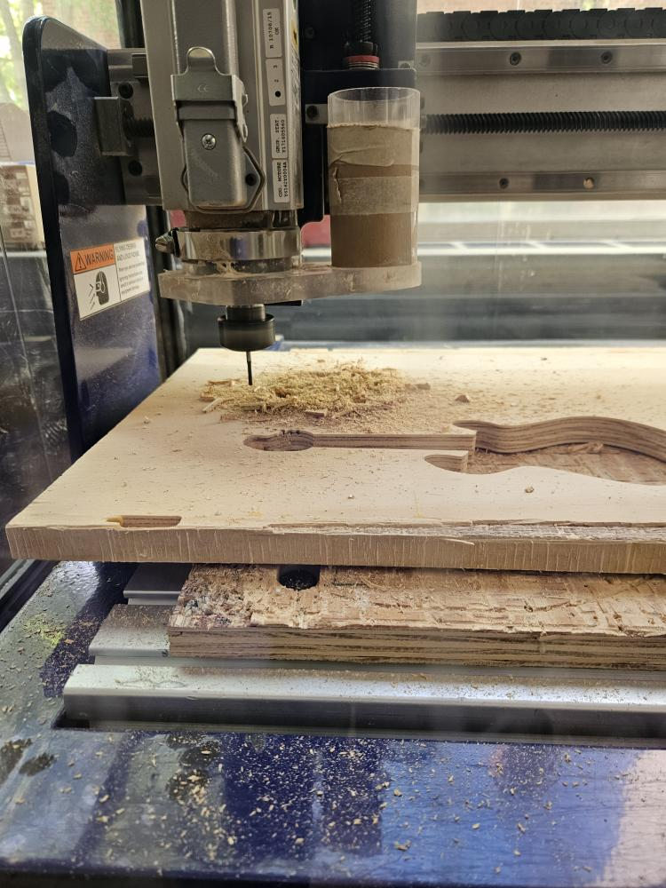
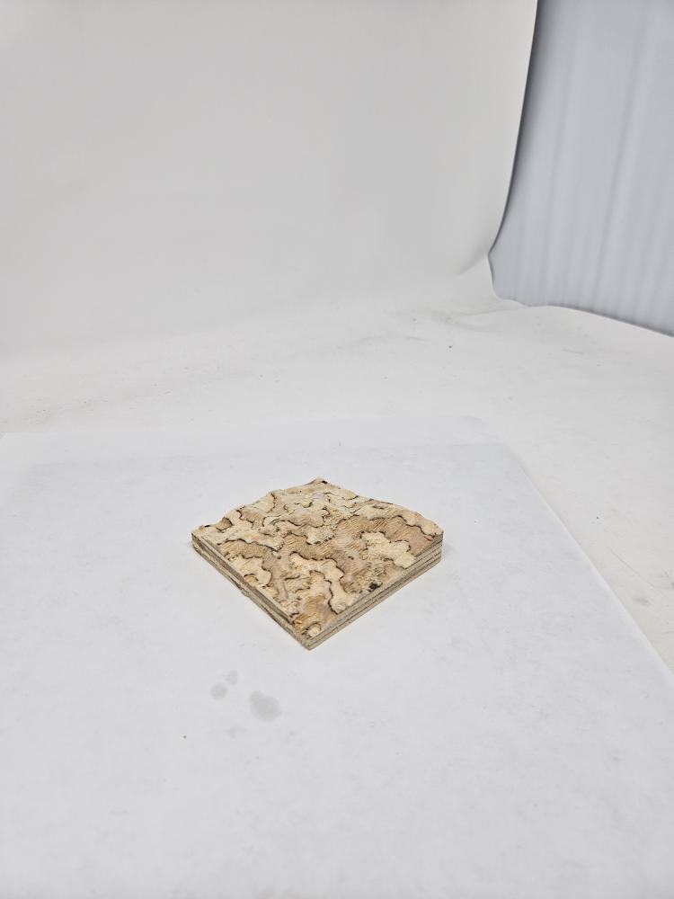

Part 1:CNC
This week we were tasked with creating an object using CNC Milling
For this weeks assignment I teamed with felow class mates Mehemet and Case .We decided to CNC the blue mountains from Jamaica .I had been to Jamaica last year and was mesmerized by the beauty of it .I twas case who brought up the idea to do so.So we settled on the idea of doing the topography of the bue mountains.

Here is the process:
First of we began to modell it on fusion which took us a solid hour or two to complete.Although we picked from another source it was the sizing part on which we had to work most since our orignal output seemed to be a metre long .We used a boit of Bobbys help and a Cases skill's to shrink to an achievable size .
Here is where we faced our first problem as such .The que to use the CNC although not ong was vey time consuming it took one group over an hour to mill their piece out.Whereas we accomplished ours in a few minutes .
At first when we began we measured the thickness of the word made sure all the machine units were in place and got started out .I was skeptica about the design since we could not see anything that the CNC was doing due to the large amounts of sawdust as visible here.

The sawdust was eaasy to remove after we were done using the vaccum .The mountiains turned out exactly how I wanted them to be.Although the cut was a bit to curved that is complex with diffrent ayers .As visible in the images it did do quite well We were pleased with what we had done .

Here is another image displaying the same.
The model clearly depicts what we aimed to do it has diffrent layer showcasing and highlighting what we aimed to achieve with our project .
Tips:
1.Make sure to sandpaper to scrape off the excessive dust or residue on your modle it seemed to be very tiring thanks to the work of me and case we did it soon enough.
2.Dont be in a hurry to remove your object since you may risk breaking it .
3.Be Gentle with it since it may be a fragile piece.
Take your time with smootining the edges to get the best possible outcomes for aesthetic appeal.
Here is the final look to present to you:
Credits:Case and Mehemet

I aimed to use CNC in further projects it is very useful tool to accomplish great things from.